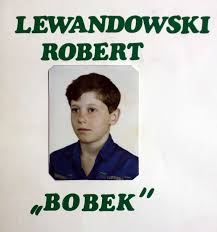
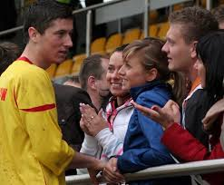
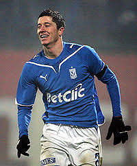

Karierę piłkarską rozpoczął w Partyzancie Leszno – nie był jednak zawodnikiem tego klubu, mógł jedynie uczestniczyć w treningach dzięki ojcu Krzysztofowi, który tam pracował. W 1997 zapisał się do Varsovii Warszawa, gdzie występował przez 7 lat w drużynach młodzieżowych i juniorskich. W tamtym czasie wyróżniał się niskim wzrostem i niewielką masą ciała, dlatego nosił pseudonim „Bobek”.  Z powodu mikrej postury w 2002 zrezygnowano z powoływania go do kadry Mazowsza. Próbował swoich sił także w innych dyscyplinach sportu: w biegach przełajowych został mistrzem województwa mazowieckiego swojej kategorii wiekowej, przez krótki czas trenował również judo. Znacząca poprawa warunków fizycznych tuż przed ukończeniem 16. roku życia (w połączeniu z prezentowanymi umiejętnościami) spowodowała, że w drugiej połowie 2004 zainteresowała się nim Legia Warszawa. W styczniu 2005 trafił do IV-ligowej Delty Warszawa, która była zapleczem „Wojskowych”. Nim jednak zdążył zagrać pierwszy mecz w zespole seniorskim, zmarł jego ojciec. W końcówce sezonu 2004/2005 strzelił dla Delty cztery bramki w lidze, a jego drużyna zajęła 5. miejsce w tabeli mazowieckiej grupy IV ligi. 1 lipca 2005 oficjalnie stał się zawodnikiem Legii Warszawa, podpisując roczną umowę. Cały sezon 2005/2006 rozegrał w III-ligowych rezerwach tego klubu, zdobywając dwie bramki. Pod koniec sezonu doznał kontuzji mięśnia, a zespół zajął 11. miejsce i spadł do IV ligi. 30 czerwca 2006 wygasła jego umowa z klubem i choć pojechał z pierwszą drużyną na letnie zgrupowanie, a ówczesny trener Dariusz Wdowczyk widział dla niego miejsce w zespole, nie zaproponowano mu nowego kontraktu.
W lipcu 2006 podpisał umowę z trzecioligowym Zniczem Pruszków, który zapłacił za niego 5 tys. zł. Szkoleniowiec pruszkowian, Andrzej Blacha, już rok wcześniej chciał ściągnąć zawodnika do prowadzonego przez siebie Hutnika Warszawa. W ciągu dwóch sezonów Lewandowski strzelił dla Znicza łącznie 37 goli (36 w rozgrywkach ligowych i jedną w Pucharze Polski). Drużyna w większości zbudowana była z młodych zawodników – w tamtym okresie w Zniczu wybili się również m.in. Radosław Majewski i Paweł Zawistowski. W sezonach 2006/2007 oraz 2007/2008 Lewandowski był królem strzelców odpowiednio trzeciej i drugiej ligi.
18 czerwca 2008 został sprzedany do Lecha Poznań za kwotę 380 tys. euro. W Ekstraklasie zadebiutował 8 sierpnia 2008 w meczu 1. kolejki z GKS-em Bełchatów, zdobywając jednocześnie swojego pierwszego gola. W grudniu został uznany przez tygodnik „Piłka Nożna” za największe odkrycie 2008 roku w Polsce. 1 stycznia 2009 redakcja imscouting.com umieściła go w dziesiątce najbardziej obiecujących piłkarzy. Dwa tygodnie później, na łamach brytyjskiego dziennika „Times”, ukazała się lista z nazwiskami pięćdziesięciu najbardziej obiecujących zawodników do lat 23. Lewandowski został sklasyfikowany na 32. pozycji. W sezonie 2008/2009 zdobył z Lechem Puchar Polski, pokonując w finale na Stadionie Śląskim, Ruch Chorzów. Latem 2009 sięgnął po Superpuchar Polski, a w meczu o to trofeum (przeciwko Wiśle Kraków) strzelił jednego gola oraz wykorzystał „jedenastkę” w konkursie rzutów karnych. 15 maja 2010 zdobył z „Kolejorzem” mistrzostwo Polski, a sam, z 18 bramkami na koncie, wywalczył koronę króla strzelców Ekstraklasy. Lewandowski wystąpił łącznie w 82 oficjalnych spotkaniach drużyny ze stolicy Wielkopolski. Strzelił w nich 41 bramek i zanotował 20 asyst.